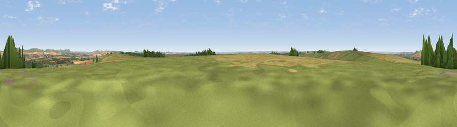

Viewpoint near Wedhampton
#15142 in England · top 23% of its area beats it · near Wedhampton · footpathWhere it is
The exact computed spot (SU 05925 55325). Click the marker for map links.
Public access: a public right of way passes within 58 m of this spot. Computed from Natural England's CRoW access layer and OpenStreetMap rights of way — not the legal definitive map. Always verify locally.
The view, rendered

A 360° render of this exact spot computed from the terrain model, tree cover and land cover — summer colours, afternoon light, calibrated against photographs of famous viewpoints. Real trees, hedges and buildings will differ in detail.
The panorama
Grey silhouette: terrain skyline in each direction (720 bearings, Earth curvature and refraction included). Dashed green: skyline with trees (+15 m) and buildings (+8 m) as obstacles. Blue strip: how far the ground is visible on each bearing.
Where the view opens
Wedge length = distance to the farthest visible ground on that bearing (vegetation-aware). Rings at 10, 25 and 50 km.
What fills the view
46% grassland · 45% cropland · 7% woodland ·
Angular shares of the visible panorama (visual magnitude), not map area. Landscape diversity 0.41 (0–1 Shannon).
Key numbers
More beautiful places nearby
The staircase of upgrades: each row has a higher view potential than everything closer. Driving times are estimates from straight-line distance, calibrated against real road routing — check an actual route before setting out.
| Place | Direction | Drive | Score |
|---|---|---|---|
| Viewpoint near Urchfont | W · 2 km | ~5 min | 66.5 |
| Viewpoint near Allington | NNE · 10 km | ~19 min | 75.6 |
| Martinsell viewpoint | NE · 15 km | ~26 min | 76.9 |
| Viewpoint near Berwick St John | SSW · 37 km | ~56 min | 78.2 |
| Viewpoint near Stinchcombe | NW · 53 km | ~75 min | 80.5 |
| Nottingham Hill | N · 73 km | ~97 min | 80.9 |
| Viewpoint near Studland | S · 74 km | ~98 min | 82.2 |
| Ballard Down | S · 74 km | ~98 min | 83.2 |
51.29702, -1.91641 · source: screening · position refined by local search. Computed location — check access rights before visiting.